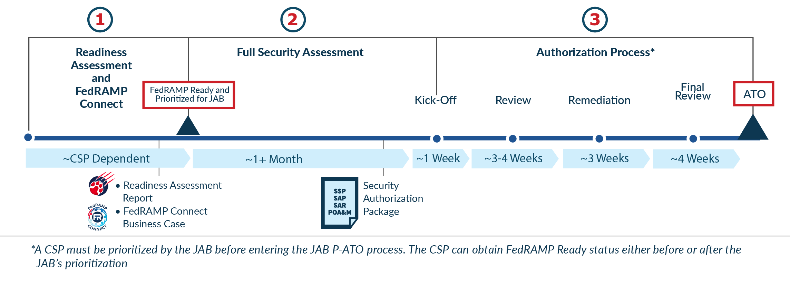

The first step for any Cloud Service Provider (CSP) interested in pursuing a FedRAMP authorization for their cloud service offering (CSO) is to determine their authorization strategy. There are two types of FedRAMP authorizations: a Provisional Authority to Operate (P-ATO) from the Joint Authorization Board (JAB) and an Agency Authority to Operate (ATO).
To decide which type of authorization is right for a particular CSO, the CSP should review Volume 1 of the CSP Playbook: Getting Started with FedRAMP [insert link] and should take into account their system’s impact level, deployment model, stack, and market demand.
Below is a high level overview of the JAB Authorization Process. Information on a CSP’s role and responsibilities within the JAB P-ATO authorization process can be found here [insert link].
JAB P-ATO Authorization:

Phase 1: Readiness Assessment and FedRAMP Connect
The JAB (which includes representatives from DOD, DHS, and GSA) works to create a broad marketplace of providers and, based on current resources and funding, only has the capacity to authorize up to 12 CSOs a year. To ensure the JAB’s resources are used most effectively, the FedRAMP PMO, CIO Council, and JAB evaluate CSOs through FedRAMP Connect.
During the FedRAMP Connect process, CSOs are evaluated and prioritized to work with the JAB based on prioritization criteria. The only mandatory requirement for vendors is that they demonstrate demand for their service by a wide variety of federal Agencies.
The JAB prioritizes six (6) vendors twice a year to work toward a JAB P-ATO. Once a CSO is prioritized, the CSP has 60 days to become FedRAMP Ready (if they aren’t already). Being prioritized to work with the JAB and being deemed FedRAMP Ready by the FedRAMP PMO is the first phase of the JAB Authorization Process detailed in Figure 2.
To achieve the FedRAMP Ready designation, CSPs partner with a Third Party Assessment Organization (3PAO) to complete a Readiness Assessment Report (RAR), which attests to a CSO’s readiness for the authorization process. The RAR provides Agencies, CSPs, and the FedRAMP PMO with valuable early feedback on whether or not a CSO is likely to obtain a FedRAMP authorization. Readiness Assessment testing should be executed by an accredited 3PAO. Once deemed satisfactory by the PMO, the CSO is designated FedRAMP Ready and advertised in the FedRAMP Marketplace.
Phase 2: Full Security Assessment
In this phase, CSPs whose CSOs are prioritized to work with the JAB and are deemed FedRAMP Ready must develop a complete security package for review. The package includes the System Security Plan (SSP), Security Assessment Plan (SAP), Security Assessment Report (SAR), and Plan of Action and Milestones (POA&M).
The CSP develops their SSP, which is the security blueprint of their system. Then the 3PAO works with the CSP to develop the SAP and tests the CSP’s system. During testing, it is critical that no changes are made to the system, and that it is frozen from a development perspective.
Once the testing is complete, the 3PAO develops a SAR, which details their findings and includes a recommendation for FedRAMP Authorization. The CSP then develops a POA&M based on the SAR findings, and includes input from the 3PAO, which outlines a plan for addressing the findings from testing.
All the components must be submitted as a complete package to the FedRAMP PMO (rather than one piece at a time) at least one week prior to a kick-off meeting with the JAB.
The FedRAMP PMO then works with the CSP to conduct a completeness check and coordinate the JAB kick-off meeting.
Phase 3: Authorization Process
The first step of the Authorization Phase is a kick-off meeting with the JAB, FedRAMP PMO, 3PAO, and the CSP’s authorization team. During this meeting, the CSP helps the JAB Reviewers gain an in-depth understanding of the system, its architecture, and associated risks, typically through a combination of briefings and informal Q&A.
Next, the JAB conducts their review. The CSP is expected to support JAB Reviewers by addressing questions and comments in a timely manner and participating in regular meetings with the 3PAO, PMO, and JAB Reviewers. During the review, the CSP must submit monthly continuous monitoring (ConMon) deliverables.
Once the JAB Reviewers have completed their review, the CSP remediates system and documentation issues. The JAB Reviewers then validate the CSP’s remediation efforts and provide the CSP with a P-ATO decision and formal authorization of their CSO from the FedRAMP PMO.
A JAB P-ATO is not a risk acceptance but an assurance to Agencies that the risk posture of the system has been reviewed and approved by DOD, DHS, and GSA. Each Agency must review and issue their own ATO, which covers their Agency’s use of the cloud service.